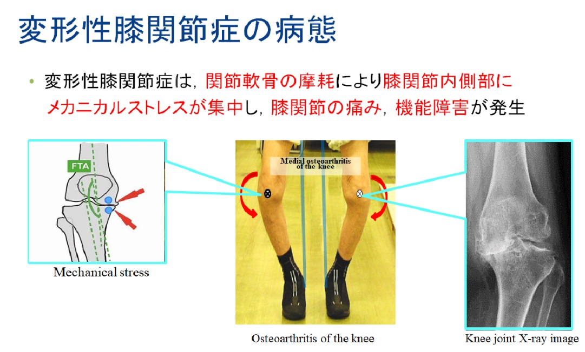

日本は超高齢社会に入り、骨・関節疾患に起因する運動機能低下は要支援・要介護の大きな要因となっています。なかでも変形性膝関節症は患者数が多く、歩行時の疼痛、内反変形、外側動揺、筋力低下などが悪循環を形成しやすいことが知られています。
従来の杖、膝装具、足底板などは受動的支援が中心であり、筋活動そのものを能動的に変化させることは困難です。そのため、筋収縮のタイミングに合わせて介入できる機能的電気刺激の応用には重要な意義があります。
Background
日本は超高齢社会に入り、骨・関節疾患に起因する運動機能低下は要支援・要介護の大きな要因となっています。なかでも変形性膝関節症は患者数が多く、歩行時の疼痛、内反変形、外側動揺、筋力低下などが悪循環を形成しやすいことが知られています。
従来の杖、膝装具、足底板などは受動的支援が中心であり、筋活動そのものを能動的に変化させることは困難です。そのため、筋収縮のタイミングに合わせて介入できる機能的電気刺激の応用には重要な意義があります。

Approach
三次元動作解析装置と床反力計を用いて、膝関節内反角、外部膝関節内反モーメント、床反力、歩行速度、歩幅、歩調、片脚支持時間などを定量評価します。
歩行中の適切な相で膝関節周囲筋へ電気刺激を加え、立脚相に必要な筋活動を補助することで、より望ましい歩行パターンへの誘導を図ります。
本研究の特徴は、受動的な支持具とは異なり、生体筋の収縮タイミングに同期して目標筋を能動的に収縮させる点にあります。姿勢改善だけでなく筋力維持・向上も期待されます。
重度両側症例や人工膝関節全置換術前後における下肢配列変化にも着目し、電気刺激装置の適用可能性を評価します。
Experiment
まず健常者モデルで安全性と基本性能を確認し、その後、変形性膝関節症患者を対象とした歩行実験を行います。刺激制御法が歩行機能をどのように改善するかを総合的に評価します。
Goal
小型・軽量・携帯可能で家庭利用に適した歩行支援装置を開発し、患者の身体的・心理的負担を軽減するとともに、通院負担や医療現場の負荷低減にもつなげることを目指します。